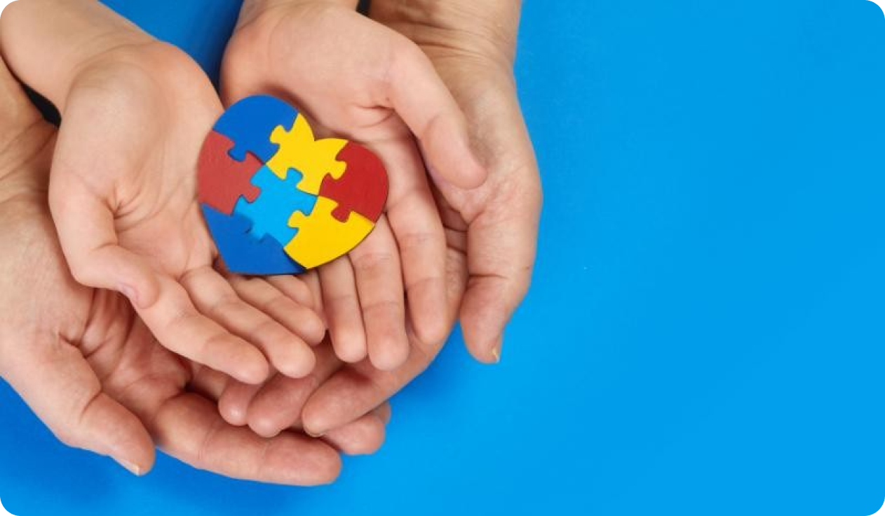

Convivendo com o Autismo
O Transtorno do Espectro Autista é uma condição permanente que acompanha o paciente da infância até a idade adulta. Existem diversas ferramentas, tratamentos e grupos de apoio para ajudar as pessoas com TEA e seus familiares a navegar as situações do cotidiano e ter uma melhor qualidade de vida.